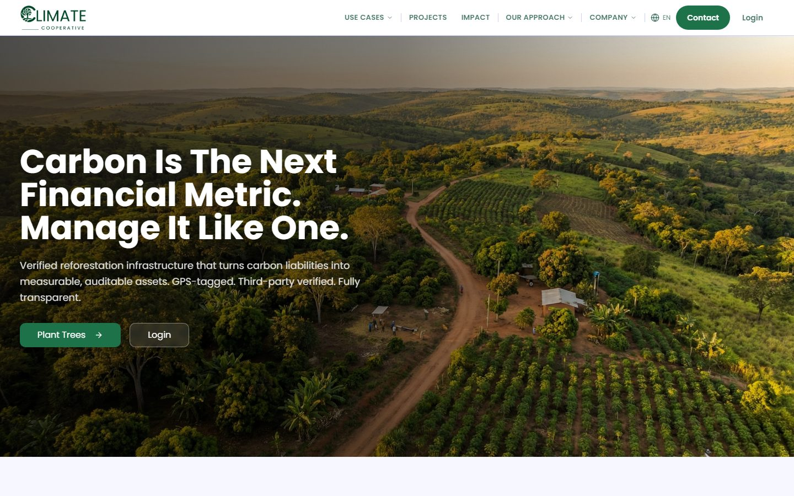
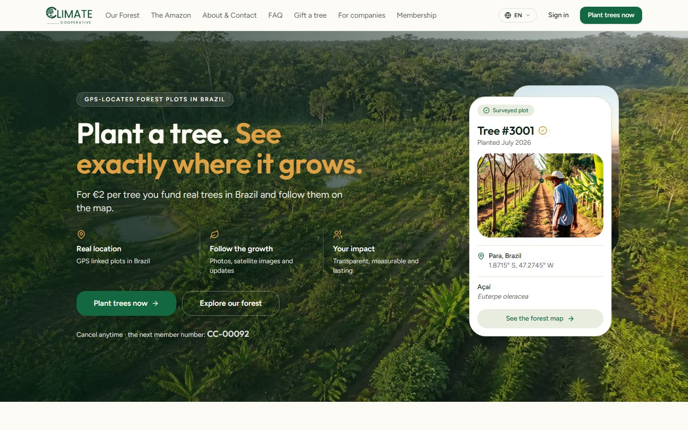

Work I'm proud of · William ten Zijthoff
Making trust
visible.
How I built the digital side of a tree-planting cooperative: three products, one forest, and an AI assistant that keeps a small team running.
Thank you for having me. I want to show you something I'm genuinely proud of: the digital ecosystem I built for Climate Cooperative. It's three products for three different audiences, all connected to one real forest in Brazil, plus a personal AI assistant I built to keep a small team moving. I'll take about six minutes, and the thread running through all of it is one word: trust.
The problem
Climate projects don't have a funding problem first.
They have a trust problem.
- Companies now face CSRD and audit pressure: estimates are no longer enough.
- Individuals have seen the headlines about offsets that never existed.
- So my question was: what if every euro could be followed to a GPS coordinate?
Here's the problem I started from. Climate projects, and carbon removal is no exception, don't fail first on money. They fail on trust. Companies are under real regulatory pressure now, CSRD and audits, so estimates aren't good enough. Consumers have read the stories about offsets that didn't exist. So the design question I gave myself was simple: what if every euro could be followed all the way down to a GPS coordinate in the forest? Everything you'll see is built around that question.
The strategy
One mission. Three front doors.
Companies
Climate Cooperative
climate-cooperative.com
Audit-ready, verified reforestation for ESG reporting.
Individuals
My Climate Cooperative
my.climate-cooperative.com
A membership: follow your own trees on the map.
Players
Sproutly
games.sproutlyrwa.com
A mobile game where daily play funds real planting.
🌳 One real forest · Pará, Brazilagroforestry systems · GPS-tagged plots · local planting partners
⚙️ Behind the scenes: Jarvis, my AI operations assistantemail · briefings · research · voice
The strategic choice was this: instead of one website that tries to talk to everyone, I built three front doors, each designed for one audience. Companies get a B2B platform built around compliance. Individuals get a membership where they follow their own trees. And a younger, mobile audience gets a game. All three flow into the same forest in Pará, Brazil. And underneath, there's Jarvis, which I'll come back to at the end. Different audiences, one backbone: that's the part I'm proudest of from a strategy point of view.
01 · For companies
Carbon is the next financial metric.
- Positioned for CFOs and sustainability leads, not for tree lovers.
- GPS-tagged, third-party verified, with a public registry and serial numbers.
- Investor dataroom and pitch: I ran a full consistency audit so every number matches across site, PDFs and deck.
climate-cooperative.com

First door: companies. I deliberately wrote this for a CFO, not for someone who loves trees. The headline is "Carbon is the next financial metric. Manage it like one." Every tree is GPS-tagged, verified by a third party, and listed in a public registry with serial numbers. One thing I want to highlight because it's very much a strategy-and-operations job: when we went to investors, I ran a full consistency audit. The pitch deck, the PDFs, the website and the financial model all had slightly different numbers. I aligned every one of them. In fundraising, one inconsistent number can cost you the room.
my.climate-cooperative.com

02 · For individuals
Plant a tree. See exactly where it grows.
- €10 a month = five trees, as a membership, not a one-off donation.
- Your own plot on a satellite map: species, date, coordinates, growth.
- A member number for life, gifts, groups, and four languages.
Second door: individuals. The insight here is about operations, not just marketing. A one-off donation plants a tree once. A membership keeps the nurseries and planting crews running season after season, so partners on the ground can actually plan. For ten euros a month you plant five trees, and on day one you see your plot on a satellite map: the species, the planting date, the coordinates, and how it grows over time. You get a member number for life, you can gift trees or start a group. It runs in four languages with recurring payments, and I was strict about safety: no test payment or bulk email goes out without a human approving it.
03 · For players
Grow a tree on your phone.
Plant a real one on Earth.
Sproutly: an idle game where daily care funds real agroforestry, as an approved VeBetterDAO partner.
0
agroforestry systems planted
The third door is the one people smile at: Sproutly. It's a relaxing mobile game. You water and care for a tree on your phone for a few minutes a day, and that activity funds real agroforestry in Brazil. It reaches people who would never visit a sustainability website. Today it has more than ten thousand players, fourteen hundred agroforestry systems planted, and a four-point-nine rating on the stores. For me the lesson was: meet people where their attention already is.
Behind the scenes
Jarvis: an AI chief of staff for a small team.
📥 Gmail & Zoho mailread-only reader agent
📅 Calendardaily 09:00 briefing
🔎 Web researchsources, not guesses
Jarvis
Claude for work with tools
a cheaper model for chat, no tools
🗣️ Voicespeaks back, local speech-to-text
🖥️ Dashboardone place for tasks and status
📱 Phoneprivate channel, next phase
🔒 Least privilege per agent✋ Human approval for anything outward🗝️ Secrets never in the code💶 Spend limits
Finally, behind the scenes. Running all this with a small team means a lot of email, a lot of follow-up, a lot of context switching. So I built Jarvis, my own AI assistant, on an open-source framework. It reads my mail, gives me a briefing every morning at nine, does research with sources, and I can talk to it by voice. What I'm most proud of here is not the AI, it's the operating discipline: every agent gets only the permissions it needs, anything that leaves the building needs my approval, no secrets in the code, and hard spend limits. That's how I think about operations in general: automate the routine, keep humans on the decisions.
What I take to remove
Three lessons, one way of working.
1
Make proof the product
Trust isn't a claim on a slide. It's a coordinate, a registry, a number that matches everywhere.
2
Many doors, one backbone
Design per audience, but run it on one shared operation, so you scale without fragmenting.
3
Leverage, with guardrails
Use AI and automation to give a small team big reach, and keep people on every decision that matters.
remove runs four regional programs with an 800+ member community for carbon removal startups. That's exactly this challenge: many audiences, one mission, a small team, and trust as the currency.
So, three lessons I'd bring to remove. One: make proof the product. Trust is not a claim, it's a coordinate and a number that matches everywhere. Carbon removal startups live or die on exactly that. Two: many doors, one backbone. remove serves startups, buyers, funders and experts across Europe, India, Africa and Latin America. Different audiences, one operation underneath. Three: leverage with guardrails. A small non-profit team can do a lot more with good systems and AI, as long as people stay on the decisions. That's the kind of Head of Strategy and Operations I'd like to be for you. Thank you, I'm happy to take questions or open any of the live sites.
Thank you
Questions?
climate-cooperative.com · my.climate-cooperative.com · games.sproutlyrwa.com
Open for questions. If useful, click through to a live site: my.climate-cooperative.com is the best one to show live, scroll to the satellite map.